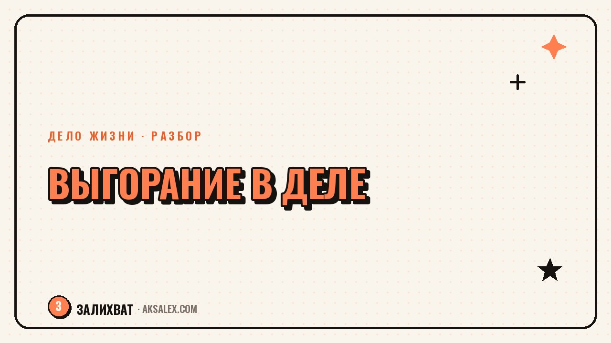

Как не выгореть на деле, которое любишь

Кажется логичным: если делаешь то, что любишь, усталость не считается - ведь это не каторга, а призвание. На деле любимое занятие выгорает так же, как нелюбимая работа, иногда даже быстрее, потому что ты не разрешаешь себе остановиться. Разберём, как хобби или дело мечты превращается в источник истощения и что с этим делать, не предавая саму идею заниматься любимым.
Как хобби становится работой, которая истощает
Путь обычно похож: сначала занимаешься делом для себя, в своём темпе. Потом появляются первые результаты, люди начинают просить об этом же, и дело превращается в заказы, дедлайны и ожидания других людей. Радость от процесса постепенно заменяется чувством долга - нужно успеть, нужно соответствовать, нужно не подвести.
Отдельная ловушка - когда дело становится частью идентичности. Если ты не только рисуешь, а «художник», отказ от заказа или пауза в творчестве начинает ощущаться как предательство себя, а не как нормальный отдых. Из этого и растёт готовность работать на пределе без остановки.
Три точки, где начинается перегрузка
- Количество заказов или проектов выросло, а время на них осталось прежним
- Появились клиенты и обязательства, из-за которых отменить работу стало неудобно, даже если сил нет
- Дело стало единственным источником дохода, и теперь на кону не только настроение, но и деньги
Признаки, что любимое дело подъедает силы
Главный сигнал - дело, которое раньше восстанавливало, теперь требует восстановления после себя. Если после рабочего дня, посвящённого любимому занятию, остаётся не удовлетворение, а пустота - это не обычная усталость, а первый признак выгорания.
Второй признак - раздражение на то, что раньше радовало: сообщения клиентов, комментарии, даже сам процесс. Третий - мысли вроде «я уже не чувствую того восторга» или «а вдруг я больше не хочу этим заниматься», которые пугают именно потому, что дело выбрано как своё, а не навязано кем-то.
Выгорание на любимом деле страшнее выгорания на нелюбимой работе не силой усталости, а тем, что теряешь не только энергию, но и то самое дело, которое считал смыслом.
Почему «любимое» не равно «безграничное»
Любовь к делу создаёт иллюзию, что ограничения ему не нужны: раз нравится, значит, можно работать без выходных и без отказов. На деле границы нужны любимому делу даже больше, чем нелюбимой работе - потому что нет внешнего регламента, который остановит тебя за тебя самого.
На обычной работе есть рабочие часы и начальник, который не позовёт в выходной без причины. В своём деле эту роль выполняешь только ты - и если не поставить границы сам, никто не поставит их за тебя.
Как вернуть границы без чувства вины
Возвращение границ редко случается одним решением - обычно это несколько конкретных шагов, которые постепенно меняют привычку работать без остановки.
- Определи фиксированное количество заказов или проектов в месяц, которое реально выдержать без перегруза
- Заведи честное правило про выходные - хотя бы один день в неделю без рабочих сообщений
- Раз в месяц делай что-то в этой же сфере без цели заработать - чтобы вернуть ощущение процесса, а не продукта
- Проговори с клиентами или аудиторией заранее, что у тебя есть время ответа, а не мгновенная доступность
Первое время эти границы будут вызывать тревогу - кажется, что отказ от заказа или задержка ответа разрушит репутацию. На практике аудитория и клиенты обычно спокойно принимают честные рамки, если их обозначить заранее, а не извиняться постфактум.
Здоровая увлечённость и выгорание: в чём разница
Иногда сложно отличить обычный творческий спад от начинающегося выгорания. Вот на что стоит смотреть.
| Признак | Здоровая увлечённость | Выгорание |
|---|---|---|
| После работы | Усталость, но с чувством удовлетворения | Опустошение без удовлетворения |
| Отношение к заказам | Можешь отказать без сильной тревоги | Берёшь всё из страха потерять клиентов |
| Мысли о деле | Иногда скучаешь по процессу в выходной | Мысль о деле вызывает раздражение или тревогу |
| Границы | Есть выходные и время без сообщений | Границ почти нет, доступность всегда |
Если большинство пунктов из правой колонки знакомы по последним месяцам, это повод сбавить темп раньше, чем дело совсем разлюбится.
Что делать, если выгорание уже случилось
Если дело уже начало вызывать раздражение, не нужно сразу решать, бросать его насовсем - это решение, принятое в состоянии истощения, редко бывает точным. Сначала стоит дать себе честную паузу: сократить нагрузку хотя бы на пару недель и понаблюдать, возвращается ли интерес.
Если после паузы радость от процесса возвращается - дело осталось твоим и только нуждалось в границах. Если даже спустя время остаётся только усталость, это честный повод пересмотреть формат: сменить нишу внутри того же дела, уменьшить объём или признать, что интерес сместился в другую сторону. Это не провал, а нормальный этап для любого долгого занятия.
Частые вопросы
Может ли любимое дело вызвать выгорание так же, как нелюбимая работа?
Да, и часто даже сильнее, потому что в своём деле нет внешних ограничений вроде рабочих часов и начальника, который остановит нагрузку. Границы приходится ставить самому, и без них перегруз накапливается быстрее.
Как отличить обычную усталость от выгорания на любимом деле?
Обычная усталость оставляет чувство удовлетворения после работы, а выгорание - опустошение без него. Если дело начинает вызывать раздражение вместо интереса даже в спокойные периоды, это более тревожный признак, чем разовая усталость.
Стоит ли бросать дело, если оно начало выгорать?
Решение бросить дело лучше не принимать в момент самого сильного истощения. Сначала разумно сократить нагрузку на пару недель и посмотреть, вернётся ли интерес - дальнейшее решение будет точнее, если принимать его не на пике усталости.
Как ставить границы в своём деле, если боишься потерять клиентов?
Стоит заранее проговорить с аудиторией или клиентами время ответа и количество проектов в месяц, а не извиняться постфактум. На практике честные рамки, озвученные заранее, обычно воспринимаются спокойнее, чем кажется до того, как их поставить.
Почему любимое дело иногда выгорает быстрее нелюбимой работы?
Потому что к любимому делу редко применяют те же ограничения, что к обычной работе - нет фиксированных часов и привычки отказывать. Плюс дело часто становится частью личной идентичности, из-за чего отказ от задачи ощущается как предательство себя, а не нормальный отдых.
Раз тема оказалась полезной, вот что почитать следующим. После увольнения есть шанс не повторить старую работу, а найти своё. Как начать без спешки и лишнего риска.
Читать статью →а не вручную